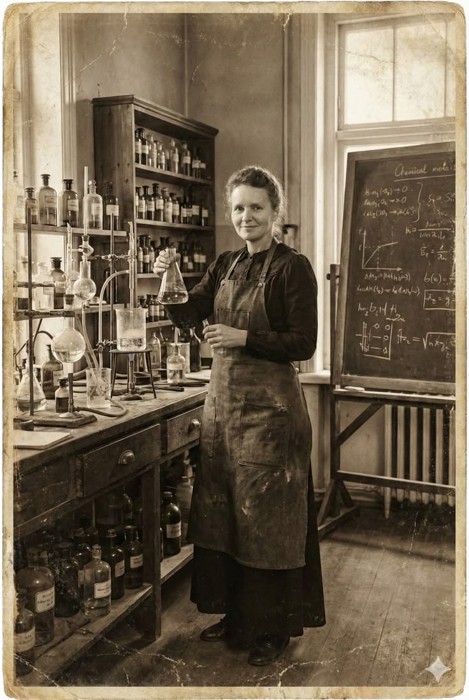
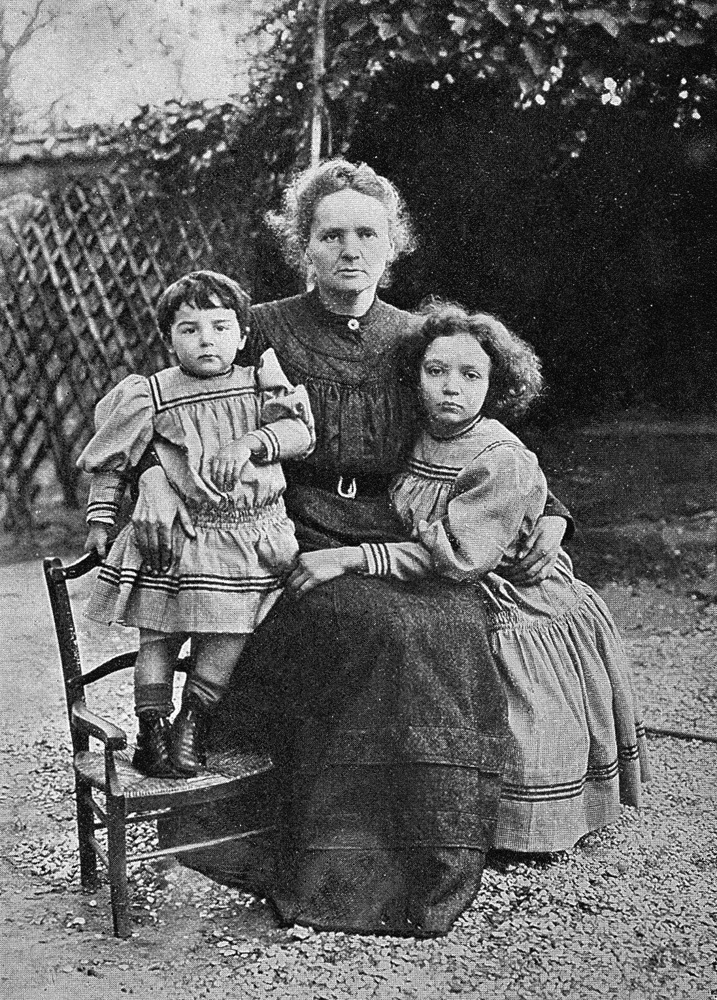
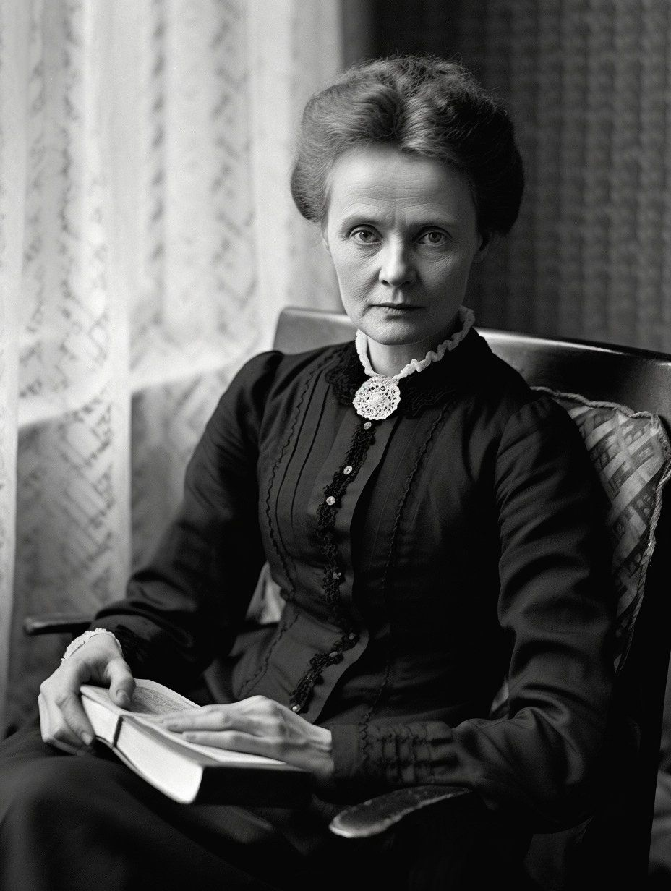
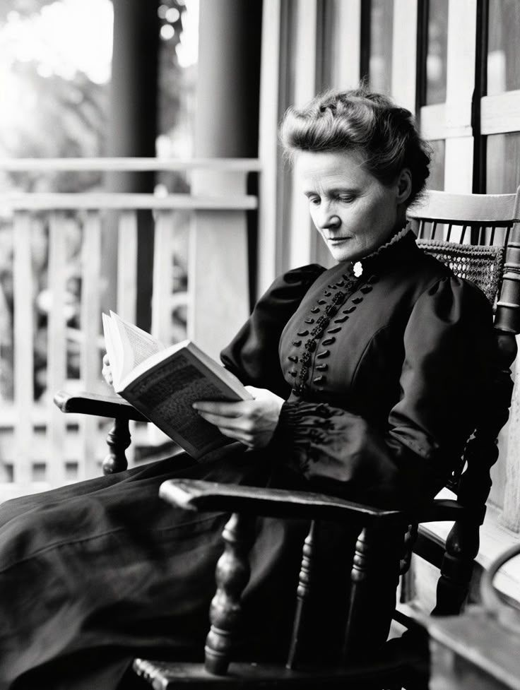

01
Nobel Prize in Physics
Curie shared the prize with Pierre Curie and Henri Becquerel for pioneering research into radiation phenomena.
A life measured in discovery
She looked into the invisible — and changed what the world could see.
Maria Skłodowska Curie
Warsaw → Paris
The woman behind the name
Born Maria Skłodowska in Warsaw in 1867, Marie Curie grew up in a family where learning mattered deeply. She eventually moved to Paris, studied at the Sorbonne, and built a scientific career at a time when women faced major barriers in higher education and research.
Her work began with a deceptively simple question: what was causing certain materials to emit penetrating energy? Instead of treating the phenomenon as a curiosity, she made it the centre of a systematic scientific investigation.
Working with Pierre Curie, she developed careful measurements and processing methods that led to the identification of two new elements: polonium, named for her homeland, and radium.
02 / Discoveries
Curie's research helped establish radioactivity as a field of scientific study. Her experiments connected precise measurement with the search for new forms of matter.
A new vocabulary for matter
Curie introduced the term “radioactivity” while developing a systematic study of radiation from uranium and other substances.

03 / Recognition
Curie shared the prize with Pierre Curie and Henri Becquerel for pioneering research into radiation phenomena.
Her second Nobel recognised the discovery of radium and polonium, the isolation of radium, and her studies of the element.
She became the only person to receive Nobel Prizes in two different scientific fields: Physics and Chemistry.
The document records the second Nobel Prize that confirmed her extraordinary contribution to chemistry.
04 / Timeline

Maria Salomea Skłodowska was born in Warsaw on November 7, 1867.
At 24, she moved to Paris and pursued advanced studies in physics and mathematics.

Her research with Pierre Curie led to the announcement of two new elements, polonium and radium.
Marie Curie died on July 4, 1934, leaving a scientific legacy that continues to shape research and medicine.

Nothing in life is to be feared,— Marie Curie Attributed quotation; commonly cited in Curie collections.
it is only to be understood.
05 / Archive
Ten archival-style images bring the story out of the textbook and into the atmosphere of the laboratory, the study and the home.
06 / Beyond the Nobel
Curie's story matters not only because of the elements she helped discover, but because she expanded the idea of who could lead scientific discovery.
During the First World War, she helped develop mobile radiography units that brought X-ray imaging closer to battlefield medicine. Her scientific institutions in Paris and Warsaw also helped turn her research into a continuing culture of medical and scientific investigation.
A tribute to a pioneer
Marie Skłodowska Curie · 1867—1934